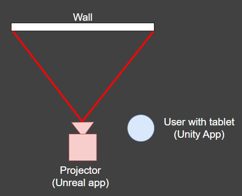
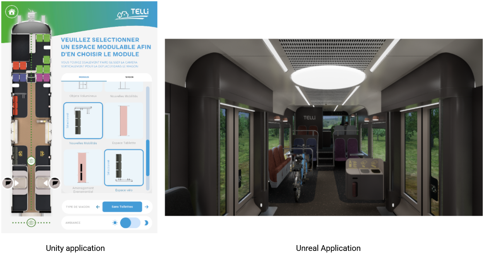

I am currently employed at Apperture, in Bordeaux, France. It is a serious games studio. I have had the opportunity to work on seven different projects, each with different technologies and scopes. Most of these projects were serious games made for advertising or communication in the medical field. Working on so many different projects also meant working with multiple platforms such as PC, iOS, Android and VR.
While I did not work on what most people would call traditional video games, I believe a large part of my experience at this company translates directly to game development. Since the projects are short, we need to iterate quickly with the client in order to respect deadlines. This also means working closely with an artist and communicating clearly about integration needs. Apperture is a relatively small studio, so we need to be polyvalent. Even though my main role is gameplay programming, I often use skills related to networking, technical art, image editing, shader programming and more. Finally, since many projects share similarities but have short deadlines, there are great opportunities to build tools. I have not yet had the time to create tools myself for the company, but I learned a lot by studying the pipelines put in place by the other developers.
Most of the projects I worked on at Apperture are under NDA, and I can sadly not talk about them. However, one of the more interesting ones in my opinion was an installation for an exhibition showcasing a new train model called “Telli”. This project was commissioned to Apperture by Graphics eMotion, a video mapping company working for the SNCF. The goal was to have a Unity application running on a Windows Surface Pro that acted as a remote for another application. The controlled application was built with Unreal Engine, running on a separate machine and projected onto a wall to simulate a full-scale train.
All interactions were made from the Unity remote application, and the feedback was visible in both the Unreal and Unity applications.
On the left is the Unity app, and on the right is the Unreal app.
I decided early on that a client-server architecture would be the best fit for the project, since it made handling disconnection and reconnection much easier. This quickly led to the decision that the Unreal application would act as the server, with the Unity application serving as the client. They needed to automatically find each other on the local network. Since they were not running on the same machine, the client needed to discover the server’s IP address. I chose to handle this with UDP broadcasting. The server regularly sends a small broadcast packet to the special address 255.255.255.255 on the local network. The Unity client listens for these broadcasts and, when it receives one, it extracts the server's IP address from the packet. This avoids the need for manual IP entry and makes the connection process much smoother for the user.